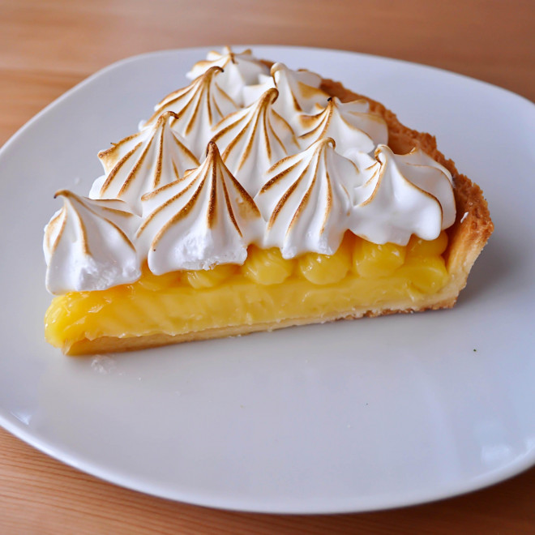

La recette inratable de la tarte au citron meringuée
Je vous propose ma meilleure recette de tarte au citron meringuée, avec une pâte sablée maison, une crème citron équilibrée, et une meringue juste dorée. Un grand classique qu’il est facile de reproduire chez soi. Aucun ingrédient compliqué, pour les plus frileux utilisez une pâte sablée toute prête, pour les autres suivez la recette. Avec ou sans meringue, à vous de choisir. Une des recettes les plus populaires sur Youtube qui a été testée et approuvée par des milliers d’internautes. Vous pouvez utiliser des citrons verts, ou pourquoi pas du pamplemousse ou de l’orange pour varier de recette.

Ingrédients
Pâte sablée :
- 250 g de farine
- 150 g de beurre
- 50 g de sucre
- 50 g sucre glace
- 1 oeuf
- 1 pincée de sel
Crème au citron :
- 150 ml de jus de citron soit 3 ou 4 citrons
- zeste d'un citron
- 150 g de sucre ou moins selon votre goût
- 3 oeufs
- 1 c. à soupe de maizéna ou farine
- 75g de beurre
Meringue (optionnel) :
- 2 blancs d'oeufs (ou 3 petits)
- 75 g de sucre

Source de la recette :
https://www.hervecuisine.com/recette/tarte-au-citron-classique/#